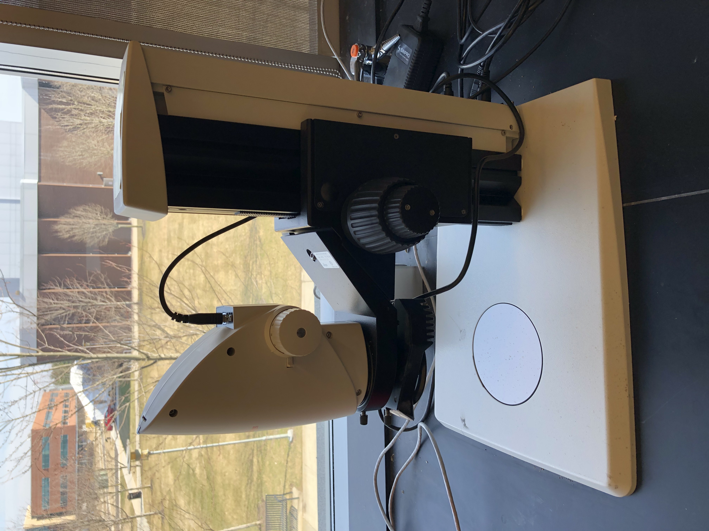
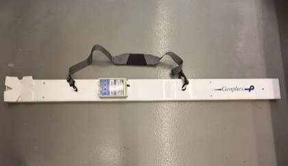

Research
Research
Research Areas
Geomaterial-Climate Interaction
How will geomaterials respond under changing climate and extreme environments? Our team is looking into geomaterial-climate interactions under various conditions, such as global warming, long-term drought, heavy rainfall, and rising sea level.


Imaging & Sensing Techniques
Our team is working on the development, testing, and application of various imaging and sensing techniques for rapid and nondestructive geomaterial characterization.


Bio-mediated Geotechnics
The bio-mediated technology utilizes microbial or other bio-related methods to reinforce geomaterial strength, reduce permeability, and remediate geoenvironmental concerns.


Energy Geotechnology
Our team is interested in the application of geotechnology in energy production (e.g., geothermal, hydraulic fracturing) and geological storage (e.g., oil and gas storage, induced seismicity, nuclear waste disposal).


Novel Geotechnical Education
Our team is always interested in exploring new approaches to attract more students into the field of geotechnical engineering and enhance their learning experience.


Facilities
Research Facilities
Soil Property Determination


Soil Structure Characterization




Multiphysics Testing of Soil



Rock Testing System


Support